Beveiliging van netwerken en computers
- 70% schriftelijk examen
- 30% labosessies
Wanneer men minder dan 8/20 heeft voor minstens één van de onderdelen kan men niet meer slagen voor het geheel van het opleidingsonderdeel.
-----------Theorie--------------
Chapter 1: Introduction
Hier worden een aantal voorbeeldjes gegeven van waarom je je systeem goed moet beveiligen en wat er allemaal kan mislopen. Ik ga hier niet verder op ingaan.
Chapter 2: Basic concepts
Confidentiality
Het doel van confidentialiteit is ervoor zorgen dat data enkel kan gelezen worden door zij die toestemming hebben om deze te lezen. Enkele voorbeelden waarbij we nood hebben aan confidentialiteit:
- Gevoelige data communiceren tussen verschillende afdelingen van een bedrijf
- Wachtwoorden
- Opslag van gezondheidsdata
- Mijn folder met pikante foto's van je moeder
| Zonder confidentialiteit | Met confidentialiteit |
|---|---|
| 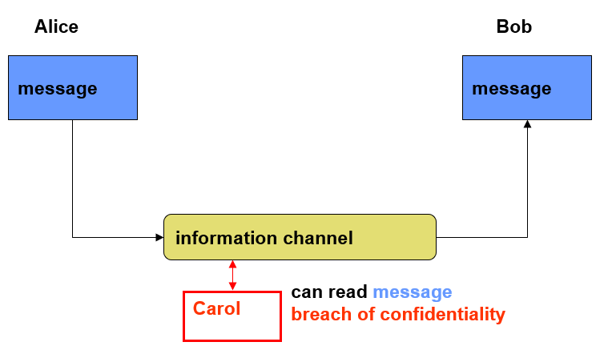 |  |
| Als Carol meeluistert op het kanaal van Alice en Bob, kan ze horen dat Alice boos is dat Bob de slacentrifuge niet heeft schoongemaakt na gebruik. | Door ons kanaal te encrypteren, kan Carol niet meer meeluisteren. Ze kan het bericht zien passeren, maar kan de gevoelig informatie er niet uithalen. |
Traffic flow confidentiality
Bij traffic-flow confidentialty willen we ervoor zorgen dat het niet mogelijk is om te achterhalen wie met wie communiceert. Hiervoor gebruiken we zogezegde Privacy Enhancing Techniques (PETs). In het vorige voorbeeld kan zelf bij het introduceren van encryptie, Trudy achterhalen dat Alice en Bob met elkaar praten.
Privacy
Privacy wordt vaak verward met confidentialiteit, maar niet elke kwestie van confidentialiteit betreft privacy. Privacy heeft meer betrekking tot het privé-leven van een persoon. Zo heeft privacy bijvoorbeeld geen toepassing op intellectueel eigendom van een bedrijf, maar confidentialiteit wel.
Authentication
We willen zeker weten dat de persoon aan de andere kans is wie hij beweert te zijn. We kunnen de authenticiteit van een communicatie garanderen op basis van:
Entity authentication
- Elke entiteit heeft een unieke identiteit en wordt beschreven door een verzameling data (ID-nummer, email). De authenticatie van de identiteit van een entiteit wordt vaak gebruikt voor entity authentication (dit staat zo in de slides oke ik ga er niet verder op ingaan tis toch niet echt super essentiële info).
Attribute authentication
- Attributen zijn de karakteristieken van een entiteit, we moeten weten of partijen over de attributen beschikken die ze beweren te hebben, en we kunnen ze dus ook daarmee authenticeren.
Data-origin authentication
- We moeten weten of de data effectief komt van de verwachte bron. Dit is belangrijk om aan te tonen dat de data betrouwbaar is.
Probleem Oplossing 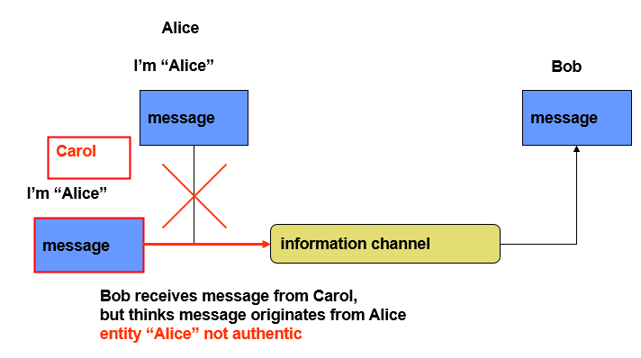 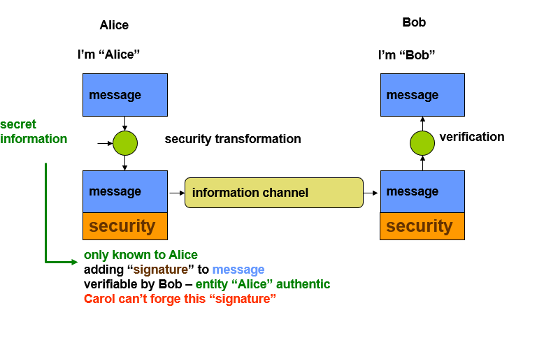
Access control / Authorization
Autorisatie bepaalt welke gebruiker aan data mag komen. Om autorisatie mogelijk te maken, moet de entiteit die aan deze data wilt geauthenticeerd zijn.
Data integrity
We willen garanderen dat de verzonden en ontvangen data identiek zijn. Er mag niets toegevoegd, verwijderd, veranderd of herhaald zijn.
Om de eerste drie te voorkomen, kan je een digitale handtekening toevoegen. Om te voorkomen dat een bericht opnieuw verstuurd wordt door een aanvaller, kan je een sequentienummer toevoegen.
Non-repudiation
Oftewel onweerlegbaarheid, wilt zeggen dat de zender niet kan ontkennen dat hij een bericht heeft verstuurd. Evenmin kan de ontvanger niet ontkennen dat hij het bericht heeft ontvangen.
Availability
We willen garanderen dat het systeem beschikbaar is voor geautoriseerde en geauthenticeerde gebruikers. Aanvallen zoals DDOS kunnen availability in het gedrang brengen.
Security threats
We maken een onderscheid tussen:
Passieve aanvallen
- Zoals afluisteren of traffic analysis
Actieve aanvallen
- Message insertion/modification
- Impersonatie
- Replay-aanvallen
- Denial-of-Service (DoS)
- Hijacking (als aanvaller een bestaande verbinding overnemen en de plaats van de zender of ontvanger innemen)
Een aantal mogelijke aanvallen op een versleuteld bericht zijn:
Brute force
- Alle mogelijke keys uitproberen
Cryptanalysis
- Kennis van de structuur van het algoritme en verbanden tussen plaintext en ciphertext gebruiken om het bericht te ontsleutelen of valse berichten te construeren
Side-channel attacks
- Subtielere manier van aanvallen waar we gebruik maken van fysieke eigenschappen (zoals verbruik, rekentijd) of fault injection gebruiken om het bericht of de sleutel te achterhalen.
Categorieën van aanvallen:
Ciphertext only:
- De aanvaller kent alleen het versleuteld bericht.
Known plaintext:
- We beschikken buiten het versleuteld bericht ook over enkele versleutelde berichten waarvoor het originele bericht bekend is.
Chosen plaintext:
- We beschikken over een bericht en zijn versleutelde versie, maar wij hebben de versleutelde versie gekozen. Het kan dus dat het bericht gewoon jibberish is.
Chosen text
- Hetzelfde, maar nu hebben wij het onversleutelde bericht gekozen
Test jezelf
Explain the difference between confidentiality, authentication, access control / authorization, data integrity, non-repudiation and availability
Which of the above security goals are realized in the network protocols from Chapter 4?
Why are sequence numbers (or nonces) added to messages? Is it a good idea to use a time stamp for this purpose?
This is to ensure that the message is unique and it hasn't been replayed or tampered with. Using a timestamp is not an excellent idea, because an attacker could guess the timestamp if the sender and receiver are not perfectly synchronized. A low precision in the timestamp could make this even easier.
Which counter measurements can be taken against DoS and DDoS attacks?
- Firewalls and intrusion prevention systems (IPS): Firewalls and IPSs can help to detect and prevent malicious traffic from reaching the target server. These systems can be configured to block traffic from known attack sources, or to filter out traffic that exhibits certain characteristics that are common to DoS attacks.
- Bandwidth limiting: Another way to mitigate DoS attacks is to implement bandwidth limiting on the server or network. This can help to prevent the server from being overwhelmed by too much traffic, and can help to ensure that legitimate traffic is able to reach the server.
- Load balancing: Load balancing can help to distribute the load across multiple servers, making it more difficult for a single DoS attack to bring down the entire system.
Give 5 examples of active attacks that can be used to compromise the security of a network protocol.
- Message insertion/modification
- Impersonation
- Replay-attacks
- Denial-of-Service attacks
- Hijacking
Chapter 3: Encryption algorithms
Steganography
Het doel van steganografie is een bericht te verbergen door het in andere data te verstoppen. In tegenstelling tot cryptografie gaan we hier ook het effectieve bestaan van het bericht proberen te verbergen. Zo kan je bijvoorbeeld een tekst in de binaire code van een afbeelding proberen te verstoppen. Een praktische toepassing hiervan is watermarking, hier gaan we een verborgen markering toevoegen aan een bestand, waardoor we bijvoorbeeld gecrackte software kunnen opsporen. Elon Musk heeft dit ook gedaan om op te sporen wie gevoelige emails had geleakt.
Encryption throughout history
Substitution cyphers
Bij een substitution cypher gaan we elke letter in onze tekst vervangen door een bepaalde andere letter. We maken onderscheid tussen enkele verschillende soorten.
Monoalphabetic
- Caesar cypher: elke letter vervangen door een letten X aantal plaatsen verder in het alphabet. Hier zijn maar 26 mogelijkheiden.
- Generic substitution cipher: elke letter mappen op een andere letter, niet in een bepaalde volgorde. Nu zijn er 26! mogelijkheden.
- Al deze ciphers zijn makkelijk te kraken met frequentieanalyse
Polyalphabetic
- Alberti cypher: een encryptieschijf om een bepaald aantal letters verder roteren
- Vigenère cipher: een sleutel bestaat uit meerdere letters deze geven elk aan welk alfabet je moet gebruiken
Digraph
- Playfair cipher: maak een matrix van letters gebaseerd op een sleutelwoord en vul de rest van de matrix met de rest van de letters van het alphabet. //TODO misschien uitleggen hoe het werkt als ik tijd en zin heb
Transposition cyphers
Hier veranderen we de volgorde van de letters om een versleuteld bericht te bekomen.
Rail Fence cipher
- Schrijf de letters in een zigzag over drie rijen en lees rij per rij.
Columnar Transposition Cipher
- Verdeel het bericht in kolommen en schud deze door elkaar aan de hand van een sleutel.
Combination ciphers
Dit is simpelweg meerdere ciphers achter elkaar zetten om het weer moeilijker te maken. Grappig genoeg ligt dit aan de basis van de meeste moderne encryptiealgoritmes.
Modern cryptography
Symmetric encryption algorithms
Dit plaatje beschrijft mooi wat symmetrische encryptiealgoritmes wensen te bereiken.
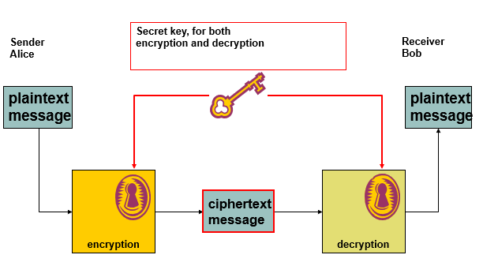
Hiermee kunnen we twee doelen bereiken:
Confidentialiteit:
- Gevoelige gegevens veilig opslaan
- Gevoelige gegevens veilig doorsturen
Authenticatie
- Als Alice en Bob een gedeelde geheime sleutel hebben, weet Alice zeker dat ze met Bob praat. Dit is eigenlijk niet zo een goede oplossing, want Alice moet alle sleutels van iedereen waarmee ze wilt praten hebben. We zijn eigenlijk ook niet 100% zeker waar het bericht vandaan komt.
Block ciphers vs. stream ciphers
Bij een block cipher encrypteren we het bericht in grotere blokken (typisch 8 tot 128 bytes). We moeten dan mogelijks padding toevoegen om het bericht aan te lengen zodat het overeenkomt met de blokgrootte.
Bij een stream cipher encrypteren we bit per bit (of byte per byte).
Feistel encryption scheme
Het Feistel schema is een cryptografisch algoritme waarbij de input wordt geëncrypteerd in meerdere rounds. Veel moderne encryptiealgoritmes gebruiken dit schema. Eén round bestaat uit de volgende stappen:
- Divide the input data into two halves, L and R.
- Apply a round function F to the right half (R) and the subkey
- XOR the result of the round function with the left half (L).
- Swap the modified left half (L) with the right half (R).
| Encrypteren | Decrypteren |
|---|---|
| 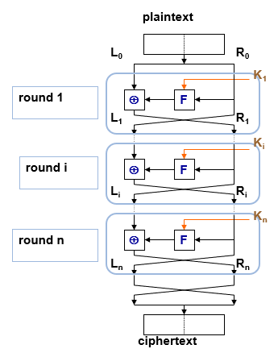 | 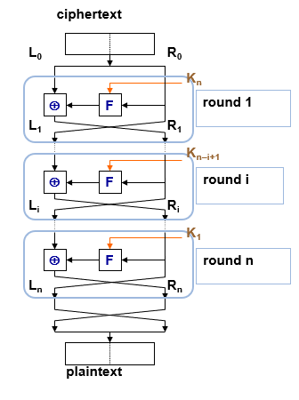 |
- Met linkerhelft
Het principe van het Feistel Schema is gebaseerd op het combineren van confusion en diffusion functies, met als doel om de statistische eigenschappen van de plaintext niet door te laten komen in de ciphertext.
Diffusion: Het veranderen van één karakter in de input heeft een invloed op meerdere karakters van de output. Dit kan je bereiken door middel van een combinatie van permutaties en transformaties.
- Dit wordt bij Feistel bereikt met het wisselen van
- Dit wordt bij Feistel bereikt met het wisselen van
Confusion: De relatie tussen statistische eigenschappen van plain- en ciphertext zo complex mogelijk maken. Dit kan je bereiken met complexe substitutieschema's.
- Met de
- Met de
De effectieve implementatie van een Feistel-netwerk hang af van een aantal parameters en designelementen:
- block size - increasing size improves security, but slows cipher
- key size - increasing size improves security, makes exhaustive key searching harder, but may slow down the cipher
- number of rounds - increasing number improves security, but slows cipher
- subkey generation algorithm - greater complexity can make analysis harder, but slows cipher
- round function - greater complexity can make analysis harder, but slows cipher
- fast software /decryption - more recent concern for practical use
- ease of analysis - for easier validation & testing of strength
DES & 3DES
DES volgt het Feistel schema. Belangrijk om te weten is dat dit algoritme de dag van vandaag niet meer veilig is.
//TODO uitleg voor DES als we die moeten kennen.
Block cipher modes
Er zijn verschillende manieren om een block cipher toe te passen:
- ECB (Electronic CodeBook)
- CBC (Cipher Block Chaining)
- CFB (Cipher FeedBack)
- OFB (Output FeedBack)
- CTR (CounTeR)
ECB: Electronic code book
Dit is de simpelste mode. We encrypteren elke block van de ciphertext onafhankelijk. Dit is natuurlijk niet optimaal, want je kan nog best info achterhalen, omdat elk blok op dezelfde manier is geëncrypteerd. Het is wel een stuk efficiënter om toe te passen op geparallelliseerde hardware. Je kan het opzich wel gebruiken voor korte berichten.
CBC: Cipher block chaining
We gaan eerst elk blok dat we willen encrypteren XOR'en met het vorige blok. Het eerste blok wordt ge-XOR'ed met een random gegenereerde initialisatievector (IV) van dezelfde grootte als het blok. Deze vector wordt dan ook nog toegevoegd aan het geëncrypteerde bericht, anders kan de ontvanger het niet ontsleutelen.
Als een aanvaller de IV op de één of andere manier kan voorspellen, is de aanval niet bestand tegen chosen-plaintext aanvallen.
Eén probleem met CBC is dat als je een bit-error hebt in één plaintext blok, deze fout wordt overgedragen naar alle volgende blokken en is het mogelijks onmogelijk om het bericht te decrypteren. Als er een fout zit in een geëncrypteerd blok, zullen er maar twee plaintext blokken een fout bevatten.
Volgens de slides is CBC ook bruikbaar voor authenticatie.
CFB: Cipher Feedback
//TODO
OFB: Output Feedback
CTR: Counter
Asymmetric encryption algorithms
Bij symmetrische encryptie maken beide partijen gebruik van een geheime sleutel, maar hoe kunnen zij nu deze sleutel met elkaar delen op een onveilig netwerk? Hier komt public key encryption met de oplossing. Elke gebruiker krijgt twee sleutels:
- Een public key: deze is gekend door iedereen
- Een private key: alleen voor de gebruiker en mag nooit gedeeld worden
Public key cyptografie kan gebruikt worden voor confidentialiteit en authenticatie:
| Confidentialiteit | Authenticatie |
|---|---|
| 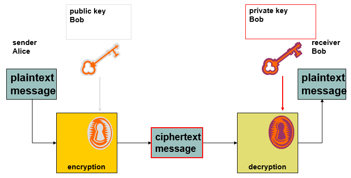 | 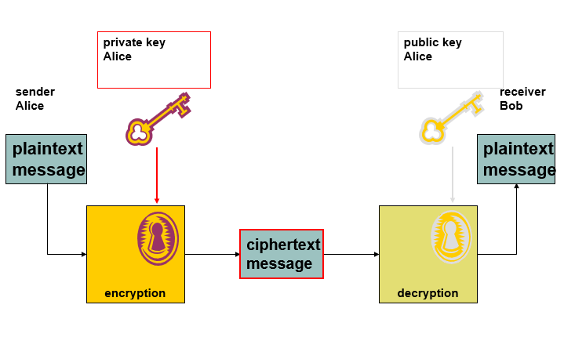 |
| Alice versleutelt het bericht naar Bob met zijn public key, zodat alleen hij het kan lezen. Hiervoor gebruikt hij zijn eigen private key. | Alleen Alice kent haar private key. Als Alice nu een bericht stuurt naar Bob dat ze encrypteert met haar private key, weet Bob dat het bericht van Alice komt als hij het kan decrypteren met haar public key. |
Nu is het dus niet meer nodig om een geheime sleutel uit te wisselen. De sleutels zijn bij deze techniek een heel stuk langer, de performantie is ook een stuk slechter. Een ideale oplossing gebruikt dus public key cryptografie om een geheime sleutel voor een symmetrisch encryptiealgoritme uit te wisselen.
RSA
Dit is het meestgebruikte asymmetrische encryptiealgoritme. RSA steunt op het feit dat het ontbinden van het product van twee grote priemgetallen zeer moeilijk is.
Neem twee priemgetallen
Bereken
Bereken
Kies
Bereken
- Het modulair multiplicatie inverse van
- Het modulair multiplicatie inverse van
Je public key is dan
Encryptie van message
Decryptie
Elliptic curve cryptography
// TODO
Hash algorithms
Hash functions
Hashfuncties kunnen gebruikt worden om sneller te zoeken in een databank, checksums, error correcting codes, maar ook voor beveiliging. Een hashfunctie maakt van een bepaald bericht een hash code of message digest. Deze kan gebruikt worden als zogenaamde vingerafdruk van een bericht, om te zien of er mee geknoeid is.
Een hashfunctie is niet hetzelfde als een symmetrisch encryptiealgoritme. Een hash kan maar in één richting berekend worden en gebruikt veer grotere sleutels en blokken. Bovendien zijn goede hashfuncties beter bestand tegen sleutelaanvallen en zijn ze een stuk efficiënter.
Wat je moet onthouden is dat je een hashfunctie dus niet kan gebruiken voor authenticatie. Een goede hashfunctie moet voldoen aan een aantal voorwaarden:
Moet werken voor berichten van eender welke grootte
Werkt maar in één richting
Weak collision resistance
- Als je een bericht
- Als je een bericht
Strong collision resistance
- Het zou onmogelijk moeten zijn om twee berichten
- Dit is in de praktijk zeer moeilijk. Als er heel veel mogelijke berichten zijn, is de kans logischerwijs groot dat er twee resulteren in dezelfde hash.
- Het zou onmogelijk moeten zijn om twee berichten
Hashwaarden moeten makkelijk zijn om te berekenen
Hash algorithms
MD-5
Wordt gebruikt voor message digest, met een hashwaarde van 128 bits. Dat is niet meer voldoende voor strong collision resistance, maar toch wordt MD-5 nog veel gebruikt.
SHA-1, SHA-2 en SHA-3
Er zijn meerdere versies van SHA (Secure Hash Algorithm)
SHA-1
- Gebruikt een hashwaarde van 160 bits en heeft dus iets betere strong collision resistance dan MD-5.
- Werkt op 512 bit datablokken.
- Beetje trager dan MD-5
SHA-2
- Vier versies: SHA-224, SHA-256, SHA-384, SHA-512
- Weer een beetje trager dan SHA-1
- Meest gebruikte hashalgoritme vandaag de dag
SHA-3
- Volledig nieuw algoritme (Kaccak)
- Gebruikt een 'sponge functie', maar ik denk niet dat dit super nuttige info is
Werking SHA-512
//TODO
MAC algorithms
MAC staat voor message authentication code en gebruikt zowel de plaintext als de gedeelde sleutel als input. Hiermee wordt getracht om de volgende doelen te bereiken:
- Ontdekken of het bericht is aangepast
- Kijken of het bericht van de juiste afzender komt
- Kijken of de volgorde van het bericht is behouden (als je een counter gebruikt)
Het verschil tussen een MAC en een hashfunctie is dat een MAC ook afhangt van de geheime sleutel. Een hash hangt enkel af van het bericht. Je kan MAC dus zien als een soort onomkeerbare encryptie. Dankzij de MAC is nu dus ook authenticatie mogelijk, omdat de geheime sleutel is gebruikt.
CBC-MAC
We encrypteren het hele bericht met CBC en gebruiken enkel het laatste blok als MAC. Dit is gemakkelijk, maar geeft ons weinig flexibiliteit in de keuze van de grootte van ons MAC-blok. Typisch zet je in dit geval de initialisatievector op 0.
HMAC
We hashen een bericht samen met een key. Je kan dit op verschillende manieren aanpakken:
- Dit is gewoon de message en key aan elkaar plakken en het resultaat hashen
- Dit is onveilig door gevoeligheid aan length-extension attacks. Het is makkelijk om data toe te voegen aan het bericht en toch nog een geldige MAC te krijgen
- Heeft dit probleem niet
Uiteindelijk hanteert men:
- Waar
Test jezelf
Try to encrypt and decrypt a self-defined message using the provided encryption approaches
What are block cipher modes? What are the advantages and disadvantages of the modes described in the course?
How secure is 3-DES? Explain why.
What does ECDHE_RSA stand for? For which purpose are these different algorithms used?
Why is AES or DES not typically used as a hash function?
What are the strong and weak collision requirements?
Give an example scenario describing why these are relevant.
What is the main difference between a digital signature and a MAC?
Chapter 4: Network and communication security
SSH
Telnet is onveilig want alles wordt ongeëncrypteerd doorgestuurd. Gebruik SSH. Het staat voor secure shell en is een protocol dat ondersteuning biedt voor:
- Veilige remote login
- Tunneling
- Bestandsoverdracht
- X-session forwarding en port forwarding
SSH bestaat uit drie delen:
SSH Transport layer protocol
- authenticatie, confidentialiteit en integriteit
- Bovenop betrouwbaar transportlaagprotocol (bv. TCP)
SSH user authentication protocol
- Authenticatie voor clients
- Zit bovenop het vorige
SSH connection protocol
- Multiplext de veilige tunnel voorzien door de vorige twee delen in meerdere logische kanalen
- Kunnen gebruikt worden voor meerdere doeleinden
SSH: Transport layer protocol
SSH maakt gebruikt van security algorithm negotiation. Als een client SSH wilt praten met een server, stuurt de client voor elke categorie (key exchange, MAC, encryptie, ...) een lijst van de algoritmes die hij ondersteunt. De server neemt dan telkens de eerste in zijn lijst die de client ook ondersteunt.
Mooi opgelijst, worden de volgende stappen ondernomen:
- Identification string exchange
- Algorithm negotiation
- Key exchange
- Service request
Onder andere hierdoor voorziet het transport layer protocol, zoals eerder vermeld authenticatie, confidentialiteit en integriteit.
Key exchange
Bij elke ssh-sessie worden er nieuwe symmetrische sessiesleutels gegenereerd en uitgewisseld. Dit gebeurt als volgt:
- Er wordt een gedeelde sleutel gegenereerd met Diffie-Helmann.
- Deze gedeelde sleutel wordt ondertekend met de public key van de client om te authenticeren.
- Nu de gedeelde sessiesleutel is gegenereerd kan de rest van de sessie geëncrypteerd worden met een symmetrische cipher.
Key re-exchange
Je kan op elk moment opnieuw sleutels uitwisselen. Die doe je best wanneer er een verandering in de algoritmes of sessiesleutels is gebeurd. Je kan sowieso best om de zo veel tijd of om de zo veel bits wisselen van sleutel.
SSH: User authentication protocol
Het user authentication protocol zorgt ervoor dat de client zich kan authenticeren bij de server. Dit kan op basis van public key, wachtwoord, maar kan ook op basis van host.
Public key
- De client ondertekent met zijn private key
- De server kijkt dan of deze overeenkomt met de public key van wie de client beweert te zijn
- Dit is computationeel vrij duur en clients hebben typisch niet altijd een keypair op zak
Wachtwoord
- Ja gewoon een wachtwoord wat wil je dat ik hier nog meer zeg
Host based
- Authenticatie op basis van de host van de client
- Zelfde als public key, maar je gebruikt de public host key van de client
- Je kan dus authenticatie voorzien voor meerdere clients op één host, dan moeten we maar geloven dat de client geauthenticeerd is op de host
Message exchange
Ik weet nog niet of dit belangrijk is dus ik gooi het hier maar neer.
- The client sends a SSH_MSG_USERAUTH_REQUEST with a requested method of none.
- The server checks to determine if the username is valid. If not, the server returns SSH_MSG_USERAUTH_FAILURE with the partial success value of false. If the username is valid, the server proceeds to step 3.
- The server returns SSH_MSG_USERAUTH_FAILURE with a list of one or more authentication methods to be used.
- The client selects one of the acceptable authentication methods and sends a SSH_MSG_USERAUTH_REQUEST with that method name and the required method-specific fields. At this point, there may be a sequence of exchanges to perform the method.
- If the authentication succeeds and more authentication methods are required, the server proceeds to step 3, using a partial success value of true. If the authentication fails, the server proceeds to step 3, using a partial success value of false.
- When all required authentication methods succeed, the server sends a SSH_MSG_USERAUTH_SUCCESS message, and the Authentication Protocol is over.
SSH: Connection protocol
Het connection protocol multiplext de secure tunnel voorzien door de SSH transport layer en user authentication layer in meerdere logische kanalen. Elk kanaal krijgt een uniek kanaalnummer aan elke kant van de tunnel. Deze kunnen verschillend zijn bij de client en server.
Een aantal voorbeelden van kanalen zijn:
- Session (shell, file transfer, e-mail, system command, ...)
- X11-connections: voorziet een GUI om applicaties die op een netwerkserver draaien te tonen op een computer
- Local port forwarding (direct TCP/IP): hierover zo meteen meer
- Remote port forwarding (forwarded TCP/IP): same
Een het leven van een kanaal verloopt simpel gezegd in drie stappen: openen, data transfer en sluiten. Moeten we alle uitgewisselde berichten kennen? //TODO
Port forwarding
We kunnen op twee manieren port forwarden met SSH. Bij local port forwarding sturen wij met onze SSH client het verkeer van een andere client veilig door naar de server. Bij remote port forwarding zal onze client in naam van de server handelen. Requests op de gekozen poorten zullen door onze client via een tunnel naar de server gestuurd worden.
We kunnen ook gebruik maken van dynamic port forwarding. Hiermee kunnen we één poort instellen om data te tunnelen naar meerdere locaties. De client moet dan wel gebruik maken van het SOCKS protocol om te vertellen waar zijn verkeer effectief heen moet.
Best Practices
Er zijn een aantal dingen die je best altijd doet:
- Zwakke wachtwoorden uitschakelen
- Gebruik alleen SSH2
- Zet PermitRootLogin op 'no'
- Gebruik password protection voor je private key
Shortcomings
- Niet gemaakt voor trage verbindingen
- Niet gemaakt voor verbindingen die vaak uitvallen
- SSH werk bovenop TCP, dus IP-adres roaming is niet ondersteund
- Niet gemaakt voor hoge netwerk-latency of lange round-trip tijd
Test jezelf
True or false: the SSH transport layer protocol encrypts TCP packets. Explain.
Explain the functions of the SSH transport layer protocol, SSH user authentication protocol and SSH connection protocol
In which scenarios does it make sense to do a SSH key re-exchange? Why?
What is the difference between a SSH session and a SSH channel? Which channels are supported?
Which port number does SSH typically listen to?
Explain the difference between local and remote port forwarding.
Explain the benefits of ephemeral DH over traditional DH.
What is the difference between a Key Distribution Centre (KDC) and Public Key Infrastructure (PKI)?
What are the advantages / disadvantages of both approaches?
List 5 reasons why a certificate might have to be revoked. How can this revocation be implemented?
Give example restrictions that can be part of a certificate. Why are these relevant?
What are the main differences between TLS and SSH?
TLS encrypted packets are authenticated when they are transmitted. Does this authentication mechanism use a shared secret key, or a private key? Why?
Is TLS vulnerable to traffic pattern analysis attacks? Why (not)?
Is the TLS record header included in each transmitted TCP packet?
For which applications / use cases would you prefer SSH over TLS (and vice versa)? Why?
Give 5 examples of security problems that can be solved by IPsec but not by TLS or SSH
Which of the following security services can be achieved with IPsec: access control, integrity, authentication, confidentiality (which types)?
Which IPsec protocols provide traffic flow confidentiality? Why is this only a limited form of confidentiality?
Chapter 5: Software and systems security
True or false: to generate an S/MIME session key, first a key exchange algorithm is invoked
What is the purpose of degenerate signedData messages in S/MIME?
Explain the workings of cross-site scripting. How can one defend against this type of attack?
Explain the differences between XSS and CSRF
What are the advantages and disadvantages of increasing the length of hash chains / rainbow tables?
Explain the major differences between hash chains and rainbow tables.
What is 2-factor authentication?
What are the security advantages of using security tokens vs software based approaches?
Which are the advantages of using full disk encryption vs manual encryption?
Chapter 6: Intrusion detection
Chapter 7: Future trends
Voorbeeldvragen
Gesloten boek
Wat is “perfect forward security”.
- Leg uit.
- Waarom is dit belangrijk voor cryptografische systemen?
- Hoe wordt dit in IPsec geimplementeerd?
Beschrijf 5 strategieen die door virussen gebruikt worden om zich te verbergen voor anti-virus software (“e.g. stealth strategies”)
Waar of vals? Waarom?
Indien de file met paswoorden verworven wordt door een aanvaller kan deze de gevonden hashes rechtstreeks gebruiken om in te loggen op een systeem.
Open boek
Waarom vermeldt het SSH protocol de gebruikte softwareversie in de uitgewisselde pakketten tijdens het negotiatiealgoritme?
Wanneer men een file eerst DES encrypteert en daarna decrypteert met dezelfde sleutel bekomt men terug het oorspronkelijk bestand. Is dit ook het geval wanneer men de omgekeerde volgorde uitvoert, dus eerst decryptie en dan encryptie? Waarom?
De wireshark trace van een security protocol wordt weergegeven.
- Welk protocol werd gecaptured?
- Leg uit wat er gebeurt in packet 65.
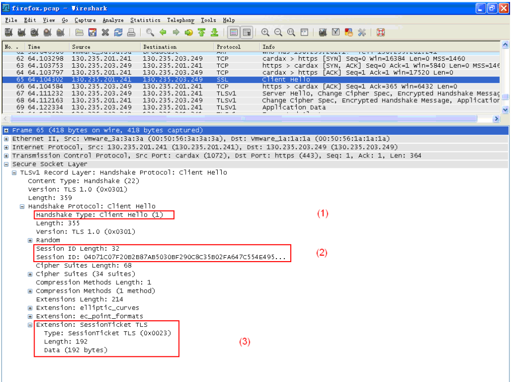
Examenvragen
Leg volgende begippen uit
- Pki
- Kerchoffs principe
- Gemengd virus
- Boot sector virus
Juist/fout
- Rainbow tables meerdere passwoorden met zelfde hash of niet?
- Cryptografische hash is een hash maar omgekeerd niet
- TLS is bestemd tegen tcp rst attack
iPsec
- Verschil tunnel en transport modus
- Teken pakket ah en esp in transport modus
- 5 security dingen waaraan ipsec voldoet
- 2 redenen waarom ESP padding nodig heeft
-----------Labo-------------
Veelgemaakte fouten ssh
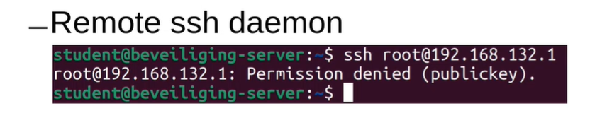
- Server zegt nee omdat de verkeerde key wordt aangeboden
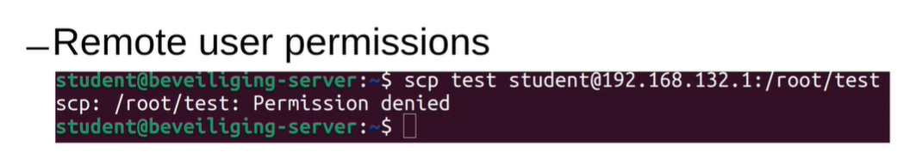
- Je mag niet aan de map
- sudo zal niks uithalen, want je krijgt meer rechten op de lokale machine
- Kopieer eerst het bestand van de lokale machine naar een map waar je wel rechten op hebt, ssh naar de server en voer sudo cp om het bestand dan op de juiste plaats op de remote te zetten
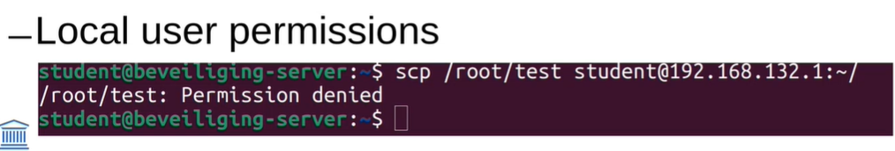
- Gebruiker heeft geen toegang tot het bestand op de lokale machine
- Hier werkt sudo wel
- Je kan wel weer een public key permission denied krijgen omdat hij de default keys van de root gebruiker zal gebruiken voor ssh
Permission denied (public key)
Check 3 dingen:
Zit ik op de juiste user?
Gebruikt de client de juiste key?
- default ~/.ssh/id_*
Heeft de server de juiste key voor de juiste user?
SSH naar private VM zonder routing
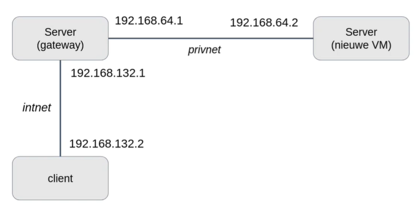
In dit scenario is er geen routing van de client naar de nieuwe VM
xxxxxxxxxxssh -NT -L 8888:192.168.64.2:22 student@192.168.132.1# | | |# | | |# Lokale poort | Login van gateway# |# Poort van nieuwe VM# NT -> gewone portforwarding, geen shell
ssh -p 8888 student@localhost
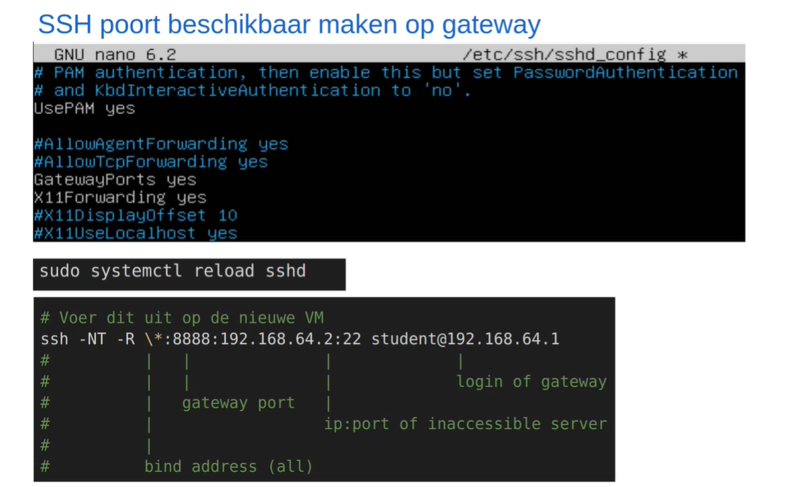
Het bovenste moet je doen op de gateway
Het tweede doet remote port-forwarding
- Al het verkeer dat wordt gestuurd naar een bepaalde poort van de remote server, wordt doorgestuurd over de ssh tunnel naar de lokale server, waarna het doorgestuurd wordt naar het IP adres dat we aangeven.
SSL
Voorziet security bovenop de transportlaag, poort 443
X.509 certificaten